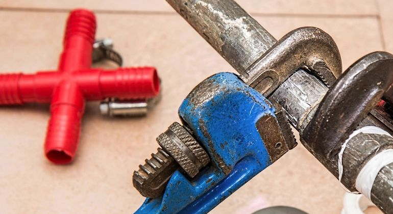
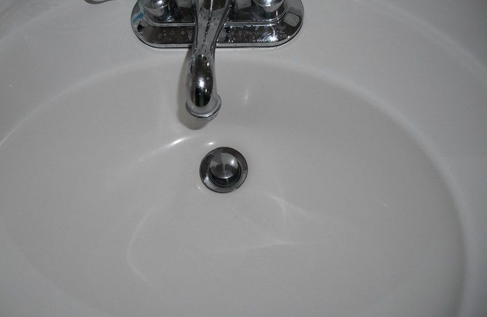
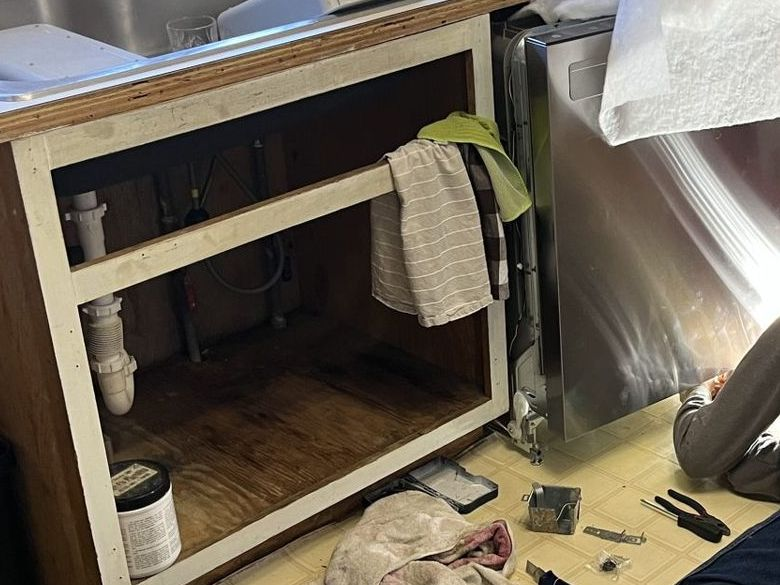

Tesisat işleri
Musluktan gidere, rezervuardan görünmeyen kaçağa kadar evdeki su hattının işleri. Her biri için belirtileri, genellikle neye bakıldığını ve usta gelmeden önce sizin neler yapabileceğinizi bir arada bulun.

Tıkanıklık açma
Lavabo, evye, klozet, duş ve banyo süzgeci gibi giderlerde suyun yavaşlaması ya da hiç gitmemesi.
Giderlerde zamanla saç, sabun kalıntısı, yağ ve kireç birikir. Tıkanıklık tek bir giderdeyse sorun çoğu zaman o giderin sifonundadır; birden çok gider aynı anda yavaşladıysa ortak hatta bir daralma olabilir. Hangisi olduğuna göre açma yöntemi de değişir.

Belirtiler
- Su yavaş iniyor, lavaboda ya da duşta birikiyor
- Giderden fokurdama sesi geliyor
- Gider kötü kokuyor
- Bir gideri kullanınca başka bir giderden su çıkıyor
Genellikle bakılan
- Sifon ve süzgeç: lavabo tıkanıklıklarında ilk bakılan yer
- Tıkanıklığın tek giderde mi, ortak hatta mı olduğu
- Gidere ve tıkanıklığa uygun açma yöntemi
Gelmeden önce siz
- Tıkalı gideri kullanmayı bırakın
- Kimyasal açıcıları birbirine karıştırmayın; kullandıysanız ne kullandığınızı söyleyin
- Lavabo altını boşaltın, kova ve bez hazırlayın
Musluk ve batarya
Damlatan, sızdıran, sert ya da gevşek musluk ve bataryaların tamiri ya da değişimi.
Kapalı musluğun damlatması genellikle içteki contanın ya da tek kollu bataryalarda kartuşun yıprandığını gösterir. Suyun ince ve dağınık akması ise çoğu zaman uçtaki perlatörde biriken kireçtendir. Tamir mi değişim mi gerektiği, parçanın durumuna göre yerinde anlaşılır.
Belirtiler
- Kapalıyken damlatıyor
- Gövdeden ya da tezgâh dibinden sızıyor
- Kol sert, gevşek ya da tam kapanmıyor
- Sıcak-soğuk ayarı oynuyor, su ince akıyor
Genellikle bakılan
- Conta, kartuş ve perlatör
- Altındaki ara musluklar ve spiral hortumlar
- Parçanın tamir edilip edilemeyeceği
Gelmeden önce siz
- Lavabo altındaki ara muslukları kapatın; genellikle biri sıcak, biri soğuk su içindir
- Perlatörü sökebiliyorsanız kirecini sirkeli suda çözdürün
- Bataryanın ve altının fotoğrafını çekin
Klozet ve rezervuar
Rezervuar iç takımı arızaları, sızıntılar, klozet ya da rezervuar değişimi.
Rezervuarın durmadan su doldurması genellikle doldurma ünitesinin (şamandıra) ayarından ya da boşaltma ünitesinin contasının işini yapmamasından olur. Bu sızıntı ses çıkarmadan da sürebilir; aşağıdaki boya testi bunu anlamanın kolay yolu.
Gıda boyası testi
Rezervuara birkaç damla gıda boyası damlatın ve sifonu çekmeden 15–20 dakika bekleyin. Klozetin içinde renk görünürse rezervuar klozete su kaçırıyordur.
Belirtiler
- Rezervuar durmadan doluyor ya da sesi kesilmiyor
- Sifon zayıf çekiyor ya da hiç çekmiyor
- Basma düğmesi takılıyor
- Klozet dibinde ıslaklık var
Genellikle bakılan
- Doldurma ve boşaltma üniteleri
- Şamandıra ayarı ve contalar
- Klozetin gidere bağlantısı
Gelmeden önce siz
- Rezervuarın ara musluğunu kapatın; dış rezervuarlarda genellikle yanında ya da altında olur
- Gömme rezervuarda basma panelinin fotoğrafını çekin
- Dipten sızıntı varsa zemini kuru tutun ve fotoğraflayın
Arıza ve kaçak kontrolü
Sorunun kaynağını birlikte bulalım.
Tavandaki leke her zaman tam üstündeki noktadan gelmez; su boru boyunca ya da döşemenin içinde yol alıp başka bir yerde görünebilir. Bu yüzden kaçak kontrolü görünen bağlantılardan, lavabo ve rezervuar altlarından ve su sayacından başlar.
Sayaçla kaçak kontrolü
- Evdeki bütün muslukları kapatın; çamaşır ve bulaşık makinesi çalışmıyor olsun.
- Rezervuarların dolmasının bitmesini bekleyin.
- Sayaçtaki rakamları not edin ya da fotoğrafını çekin. Bazı sayaçlarda su geçerken dönen küçük bir yıldız çark bulunur; dönüyorsa su geçiyordur.
- Bir iki saat hiç su kullanmadan bekleyin, rakamları yeniden okuyun.
- Rakamlar değiştiyse tesisatta bir yerde su kaçıyor olabilir.
Çoğu mekanik sayaçta siyah haneler metreküpü, kırmızı haneler metreküpün küsuratını (litre düzeyini) gösterir. Sayacın kendisiyle ya da sayaçtan önceki şebeke hattıyla ilgili arızalarda İstanbul'da İSKİ'ye (ALO 185) başvurulur.
Sayaç defteri
İlk okumayı yazıp saatle kaydedin; su kullanmadan bekledikten sonra ikinci okumayı girin. Kayıt yalnız bu tarayıcıda tutulur.
Siyah: metreküp · kırmızı: küsurat
İki okumayı ve aradaki süreyi girin; sonuç burada görünür.
Yerinde servis
Adresinize gelinir; arıza yerinde görülür.
Telefonda ya da fotoğraflardan arızanın türü büyük ölçüde anlaşılabilir, ama asıl karar yerinde verilir. Gelişi kolaylaştırmak için birkaç küçük hazırlık işe yarar:
- Arızalı yere erişimi açın: lavabo ya da evye altındaki dolabı boşaltın.
- Ana vananın ve ara muslukların yerini bilin.
- İş apartmanın ortak hattını ilgilendiriyorsa yöneticiye haber verin.
- Evcil hayvanlarınızı çalışılacak alandan uzak tutun.
- Değişim yapılacaksa almak istediğiniz ürünü önceden konuşun.

Listede yoksa sorun, bilgi verelim
- Ara musluk ve ana vana. Eskiyen, tam kapanmayan ya da sızdıran vanalar.
- Sifon ve süzgeç. Lavabo, evye ve duş giderlerinin parçaları.
- Spiral hortumlar. Batarya ve rezervuar bağlantıları.
- Makine bağlantıları. Çamaşır ve bulaşık makinesinin su girişi ve gideri.
- Duş seti. Duş başlığı, hortum ve askı.
- Giderden gelen koku. Kuruyan sifon ya da bağlantı kaynaklı kokular.
Doğalgaz tesisatı ayrı bir iştir. Gaz tesisatı yetki gerektirir; bu sayfadaki işler su tesisatı içindir. Gaz kokusu alırsanız 187 Doğalgaz Acil'i arayın.